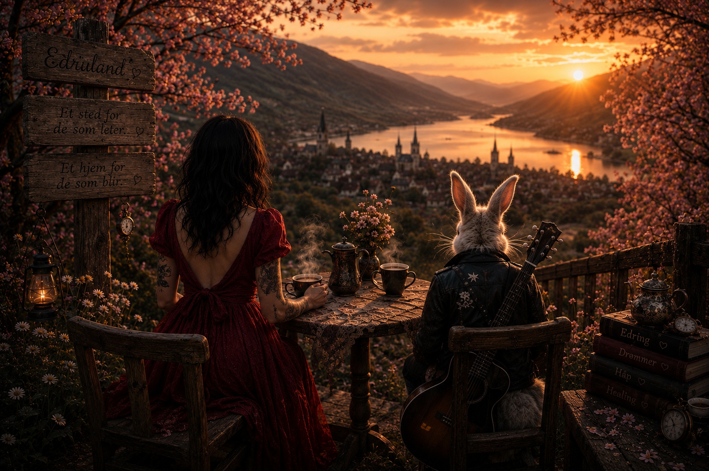

Borgerkrig
«Jeg vet ikke om så mange som har så god innsikt i mennesker, avhengighet og edring som deg. Du kan lett sette meg på plass når jeg begynner å rusromantisere,» sa Herr Percy over en kopp kaffe her om dagen.
«En dag håper jeg at du kan være like fornuftig og god mot deg selv som du er mot andre.
Så skriv om det. Skriv om å snakke fint til seg selv.
Tekstene dine hjelper folk. De hjelper meg. Og de hjelper andre som oss, Alise.»
Men åh, som jeg tviler.
På meg selv. På tekstene mine. På tankene mine. På løftene mine til meg selv.
For hvordan skal jeg kunne stole på meg selv, når jeg så mange ganger kunne love meg selv om morgenen at jeg ikke skulle drikke — og likevel stå der klokken ti på stengetid med vinflaska i hånda.
Blikket mitt som ikke klarte møte han i kassa.
Jeg rullerte på både butikker og pol. Som om det hjalp.
De skjønte det nok likevel. Det skamfulle blikket. Desperasjonen.
Gaveposene jeg kjøpte med vinflaskene, som om de skulle til noen andre. Som om det gjorde det mindre sant.
«Greit å få unna helgehandelen tidlig,» hørte jeg meg selv si mens jeg kjøpte to sixpacks på en tirsdag.
Som om jeg måtte forsvare meg for et menneske jeg aldri hadde møtt.
Som om løgnen nesten ble sann hvis jeg bare sa den høyt.
Og alle de svarte søppelsekkene med tomgods.
De som var så pinlig fulle at jeg kjørte til butikker langt unna for å levere dem.
Svetten som rant nedover ryggen hvis det ble kø.
«Jaja, det var jo en fin feiring,» hørte jeg meg selv si.
Som om jeg hadde drukket sammen med noen.
Men det hadde jeg jo nesten aldri.
For det var ikke mennesker jeg ville ha.
Det var rusen.
Jeg ville bli vektløs. Forsvinne litt. Slippe å være i meg selv.
Ut og spise med folk kunne nesten føles irriterende. Tre retter og vinpakke, mens alle andre smakte på vinen og snakket om hva som passet til maten.
Som om smaken betydde noe.
Maten var da ikke interessant.
Rusen var det jeg ville ha. Og den ville jeg helst ha alene.
Kjenne at kroppen slapp taket. At hodet stilnet. At ingen så hvor mye makt glasset hadde over meg.
Mens jeg satt der i en indre borgerkrig og ødela mitt eget liv med mine egne to hender.
Og alle de søndagene.
Alle gangene jeg lovte meg selv at neste uke skulle bli annerledes.
Så klarte jeg kanskje mandag. Noen ganger helt til onsdag.
I beste fall en uke.
Før selvrespekten igjen forsvant i samme rasende fart som vinen i glasset.
Så hvordan snakker man fint til seg selv etter noe sånt?
Hvordan bygger man tillit til et menneske som har sviktet seg selv igjen og igjen?
Og det mennesket er deg selv.
Det er nå jeg sikkert skulle skrevet at jeg vet svaret.
Men det gjør jeg ikke.
Jeg vet bare at jeg har sluttet å love meg selv store ting.
Jeg har bare innsett at jeg alltid vil være én enhet unna å falle tilbake i en nedadgående spiral.
For én enhet er ikke én enhet.
Én enhet er som å kaste bensin på et bål og håpe flammene skal slukke.
Og jeg har kastet så mange kanner på det bålet at jeg nesten brant meg selv opp.
Så kanskje er min eneste oppgave nå å akseptere at glørne alltid kommer til å finnes der.
Og at i det øyeblikket jeg begynner å innbille meg noe annet — da er jeg i fare igjen.
Da står jeg igjen med handling.
Jeg har makten i de samme hendene som en gang nesten tok livet av meg, til å sette bensinkanna fra meg.
Og kanskje er det sånn tillit bygges igjen.
Ikke gjennom tanker. Ikke gjennom store løfter.
Gjennom handlinger. Små, daglige handlinger.
At jeg blir værende. At jeg tåler meg selv.
Tåler følelsene. Gleden like mye som sorgen. Overveldelsen like mye som angsten.
At jeg ikke drikker på det.
At jeg velger meg selv igjen og igjen. At jeg velger livet mitt med alt det innebærer.
At jeg stoler på at jeg kan regulere meg selv uten den kjemiske, giftige selvreguleringen alkohol faktisk er.
At jeg kan hoppe av tredemølla og faktisk gå fremover.
At for første gang på lenge lar jeg handlingene mine stå på samme side som meg selv.
Og med det kan jeg endelig la den indre borgerkrigen stilne.
Jeg skal ikke drikke i dag.
